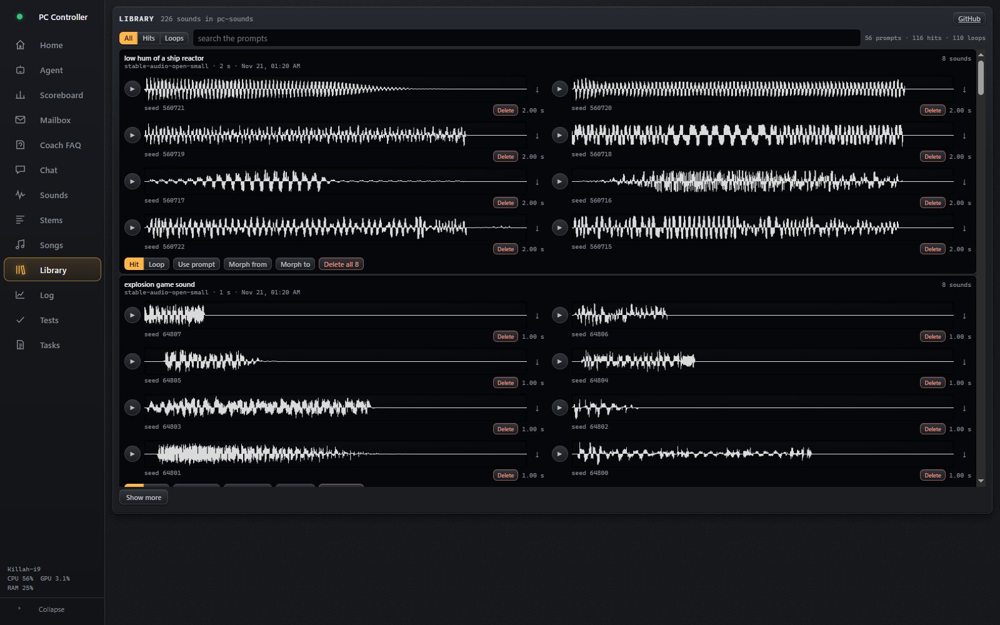
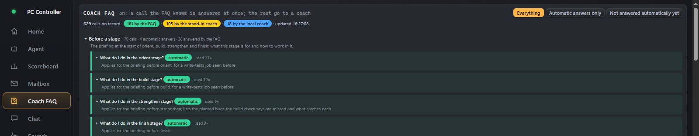
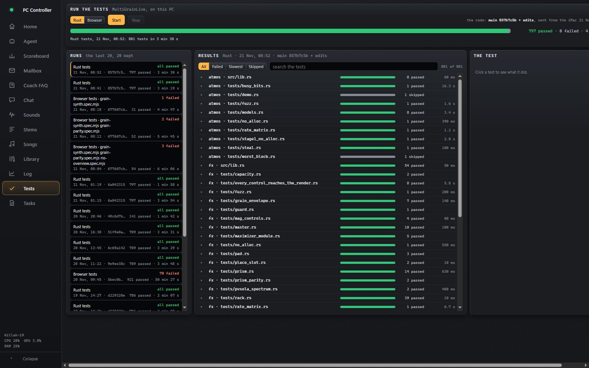

The AI sound lab
A GPU PC that makes sounds, stems and songs from text, runs small local models on real coding jobs, and feeds a desktop audio app, all managed from a Mac.
ProductAudioBuilt with AI
226generated sounds, each with prompt, seed and model
120sandboxed coding jobs for local models
181 of 629agent questions answered by the FAQ
4audio models: Stable Audio Open, ACE-Step, TangoFlux, Demucs
The problem
- Generating audio needs a GPU. Designing with it happens on a Mac.
- Small local models are cheap but unreliable, and I wanted to know exactly where.
- Every generated sound had to be traceable and reproducible.
What I did
- Built the PC Controller: one page to make sounds, split stems, render songs, watch the machine and run tests.
- Logged every sound with its prompt, seed and model, committed automatically to a library.
- Connected it to Audio Edit & Tag: a Library page pulls any sound into its grain, chop or edit tools.
- Set up a manager and worker loop. Claude on the Mac writes tasks, and local models on the PC work them in four stages against hidden tests and planted bugs.
- Added a coach and a FAQ: repeated questions are answered automatically, new ones go to a coach, and lessons that pass carry into the next job.
- Measured the limits: which models fit on the card, how many jobs run at once, and where small models' judgment fails.
What changed
- A sound library that grows on its own, ready to curate into packs.
- A scoreboard that shows whether local agents improve as lessons build up.
- A bridge that hands a small coding job to a local model and re-runs the tests itself.


